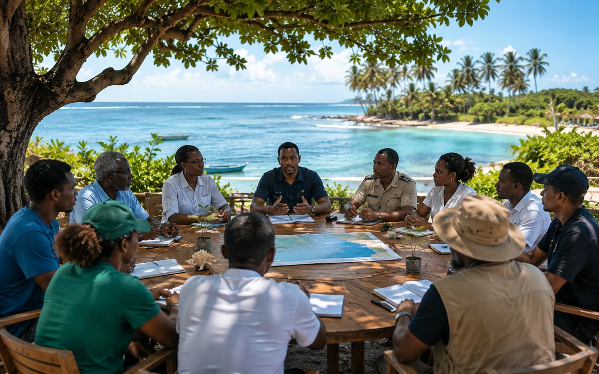

Présentation
Créer des espaces d'échange maîtrisés
Dialogues du Littoral peut accueillir des formats d'échange, webinaires, rencontres ou contributions lorsque le cadre, les intervenants et les informations publiables sont validés.
Programme
Un programme pour encourager des échanges utiles, responsables et documentés autour de la gouvernance et de la protection des espaces littoraux.
Présentation
Dialogues du Littoral peut accueillir des formats d'échange, webinaires, rencontres ou contributions lorsque le cadre, les intervenants et les informations publiables sont validés.

Favoriser le dialogue multi-acteurs, la pédagogie et la circulation d'informations publiques utiles aux littoraux.
Institutions, associations, médias, experts, enseignants, jeunes, collectivités, diaspora et citoyens engagés.
Webinaires possibles, rencontres, notes de synthèse, questions publiques et contributions thématiques validées.
Communiqués, presse, documents institutionnels, fiches ressources et contenus de transparence.
Proposer un sujet, une expertise, une rencontre ou une coopération dans un cadre éthique et validable.
Aucune reconnaissance, affiliation ou coopération n'est suggérée sans confirmation formelle.
Les propositions doivent préciser l'objectif, le public visé, le cadre souhaité et les éléments pouvant être rendus publics.